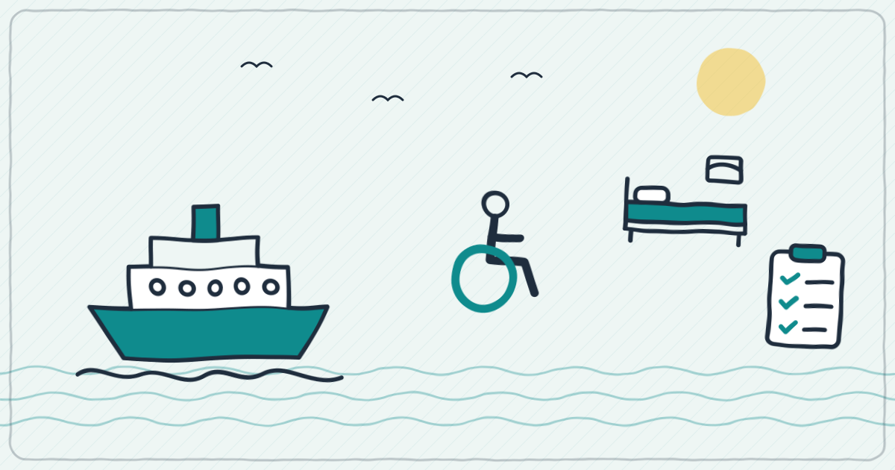

Deaf, Hard of Hearing or Low Vision? How Cruises Work
Big ships can accommodate hearing and vision loss well, but nearly everything is provided on request. Lines offer visual or vibrating alert kits, captioned cabin TVs, braille and tactile signs, large-print menus, orientation walks and, with notice, interpreters. Trained service dogs are accepted; emotional support animals usually are not. Ask the accessibility team at booking.

A cruise ship is a well-run hotel that moves, and that suits travellers with hearing or vision loss better than many land trips. The catch is that the equipment and services exist but sit in a cupboard until someone asks. Contact the line's accessibility department the week you book, and the ship will be ready for you.
What do cruise lines offer for deaf and hard of hearing guests?
In your cabin
The key item is an alert system that converts sound into light or vibration. Depending on the line and the ship, you either book a designated accessible cabin with the system built in or request a portable kit that the crew install in a standard cabin. A typical kit covers:
- a door-knock sensor that flashes a lamp
- a visual signal for the cabin phone
- a strobe tied to the smoke detector and general alarm
- a bed-shaker for emergency alerts
- closed captions on the cabin TV, standard on most modern ships
Around the ship
Hearing loops or assistive listening devices in the main theatre exist on some ships but not all. A few lines will provide American Sign Language interpretation for headline shows, port talks and the safety briefing, and that usually needs weeks of lead time. Shore excursion guides rarely use amplification, so small-group tours beat 50-seat coaches.
Daily programs, menus and the ship's app carry most of the information that gets announced over the public address system. Reading the app each morning covers what you might miss over the speakers. For the safety side, what the ship's emergency announcements mean explains the codes that everyone else hears.
What do cruise lines offer for blind and low vision guests?
Standard provision on most big ships includes:
- braille or raised numbers at lift panels and often at cabin doors
- large-print or braille menus and daily programs on request
- an orientation walk with a crew member on boarding day, if arranged ahead
- audio description on some cabin TV channels, which varies widely
- app accessibility that ranges from excellent to poor depending on the line
Ship design matters more than the brochure admits. A mega-ship with 18 decks and three lift banks is a maze of near-identical corridors. A cabin close to a lift lobby, plus one learned route to the dining room and one to your muster station, removes most of the daily friction. Mid-size ships are simply easier.
Tender ports
A tender is a small boat that ferries passengers ashore when the ship anchors instead of docking. Moving decks, steep steps and crew shouting instructions make tenders the hardest moment of the week for a low-vision traveller. Check your itinerary for tender stops and decide in advance whether those are ship days.
Can I bring a guide dog or hearing dog?
Trained service dogs are generally welcome on the major lines with advance notice, and the ship provides a relief area, usually a box of mulch or turf on an open deck. Emotional support animals are not treated as service animals by most lines and are usually refused.
The ship is the easy part. Every country on the itinerary applies its own animal import rules, and some Caribbean islands and most of Asia and Australia make it impractical. The US tightened its dog entry rules in 2024 with age, microchip and online form requirements, and Canada's CFIA has its own rules for the dog's return home.
How do I request accommodations?
- Before paying a deposit, call or email the line's accessibility team and ask what your specific ship has. Fleets are not uniform.
- At booking, list every need in one message: alert kit, captions, interpreter, large print, braille, orientation walk, service dog, boarding help.
- Get written confirmation and carry it with your travel documents.
- Ask to be added to the ship's safety list so crew check your cabin during an alarm.
- Request terminal assistance for embarkation, whether at Canada Place in Vancouver or a Florida or Texas port.
- On boarding day, test the kit and visit guest services about anything missing.
Lines expect guests who need personal care to travel with a companion, since crew assist with the ship but not with personal tasks. The same desk books the wheelchair cabins; doing Alaska in a wheelchair covers door widths, tender limits and which ports dock. If you are travelling with a group, the same accessibility team can note seating needs for dinner, which pairs well with the advice in arranging dining for a big party.
| Need | Who to ask | When |
|---|---|---|
| Alert kit or accessible cabin | Accessibility desk | At booking; kits are limited per ship |
| ASL interpreter | Accessibility desk | At booking, typically 30–60 days minimum |
| Braille or large-print menus | Accessibility desk, then maître d' | Before sailing, confirm on day one |
| Orientation walk | Accessibility desk, then guest services | Before sailing |
| Service dog | Accessibility desk plus each port's authority | Months ahead |
| Terminal assistance | Accessibility desk | At least two weeks before |
Flights and insurance for Canadian and US travellers
Canada's One Person, One Fare rule means a passenger who needs an attendant may fly the attendant free on domestic flights with the large Canadian carriers, which matters on a Toronto to Vancouver leg for an Alaska cruise. US airlines have no equivalent, though they must provide assistance through the airport.
Declare any hearing or vision condition on your travel medical policy, and read the rest of the wording while you are at it; cruise travel insurance for Canadians lists what must be there. Failing to declare a condition gives an insurer an excuse to decline a claim for anything connected. If you use a CPAP as well, the CPAP-on-a-cruise checklist covers the extension cord and distilled water requests, which go to the same accessibility team.
Want this checked for your own sailing? A licensed cruise consultant can price it up and answer questions for free, with no obligation.
Ask a cruise expert →The one habit that makes it work
Ask early, in writing, for everything at once, and keep the reply. Ships are generous with accommodations once they know you are coming, and almost every bad story starts with a request made at the pier.
Questions people also ask
Will I know if there is an emergency if I cannot hear the alarm?
Ask for an accessible cabin or a portable alert kit, which turns the alarm, phone and door knock into flashing lights and a bed shaker. Also ask the line to flag your cabin on its safety list so crew physically check on you during an alarm.
Can I get a sign language interpreter on a cruise?
Some lines will arrange ASL interpretation for selected shows, port talks and safety briefings if you request it at booking, often with several weeks' notice. Policies vary by line, so get the offer in writing before you pay a deposit.
Is a cruise a good holiday for someone who is blind?
It can be. One hotel, one unpacking, familiar corridors and crew who learn your name make ships easier than a multi-stop land trip. The hard parts are tender ports and very large ships, so pick an itinerary that docks everywhere and a cabin near a lift bank.